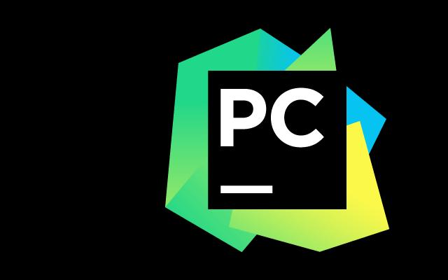
今天要写一些可以明显改善开发效率的使用技巧，一旦学会，受用一生。以下代码演示是在 Mac 环境下，Windows 也类似，Command 键 相当于 Windows 上的 Control 键。
代码排版，自动PEP8
pep8 是Python 语言的一个代码编写规范。如若你是新手，目前只想快速掌握基础，而不想过多去注重代码的的编写风格（虽然这很重要），那你可以尝试一下这个工具 - autopep8
首先在全局环境中（不要在虚拟环境中安装），安装一下这个工具。
sudo pip install autopep8
然后在 Pycharm 里导入这个工具。
`Name: AutoPep8
Description: autopep8 your code
Program: autopep8
Arguments: --in-place --aggressive --aggressive $FilePath$
Working directory: $ProjectFileDir$
Output filters: $FILE_PATH$:$LINE$:$COLUMN$:.*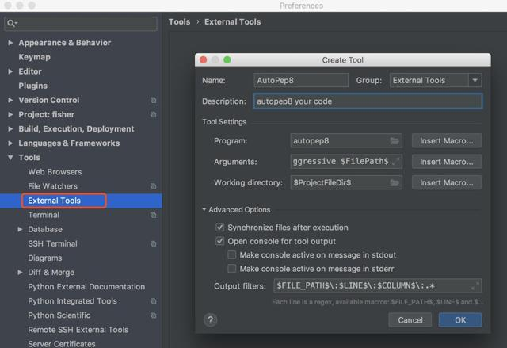
我随意写了一段不符合 pep8 规范的代码。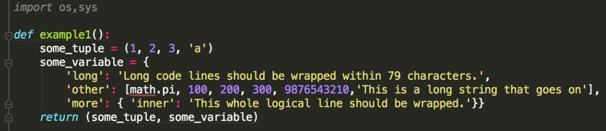
点击右键，选择External Tools -> AutoPep8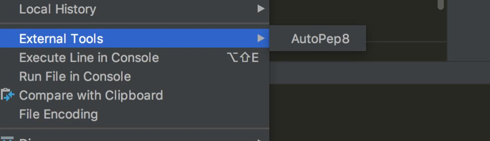
看一下效果，还是挺明显的。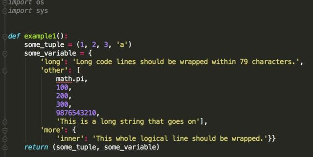
你可能会说，Pycharm 本身就自带这个功能了呀，快捷键 Command+Option+L ，就可以实现一键pep8了。你可以对比一下，Pycharm 自带的代码 pep8 化功能 并没有像这个autopep8 来得彻底。我相信你最终的选择肯定是后者。误删文件，一秒找回
上周，由于自己的误操作，在没有任何备份的情况下，将一个自己写了两个星期的项目给删除了。待我回头神来的时候，我甚至都记不起是何时进行的删除操作。
做为一名老司机，当然是临危不惧地打开了回收站，进行一番搜寻，几个月没有清理过的回收站，真是一片狼藉，什么 jpg，avi 都有，不堪入目呀。
我用一分钟快速浏览了一下，没有发现我要找的那几个 py 文件，我心想，应该是文件太多了，看叉掉了。由于项目是最近写的，文件名我还清楚地记得，既然有文件名，那就利用windows 自带的搜索功能，结果还是没有，这下我才开始意识到事态的严重性，文件可能真的「没了」。
我已经很久没有清理过回收站了，为什么回收站里会没有我的文件呢？
我想这可能是一次非同寻常的 delete，会不会是在 Pycharm 里的 发起删除操作，不会往回收站里丢呢？经过一番测试，在回收站还真的找不着，但是这次尝试也无意中发现了 Pycharm 的隐藏的一个功能 Local History，它会保存你对文件的所有操作记录。
就拿我的刚刚测试的文件来举例，我先是新建了一个文件，然后对在这个文件里添加了几行代码。最后我将这个文件删除了。
此时你可以在你的项目目录里，点击右键，有个 Local History 的选项，再点击子选项 Show History，你可以看到这里有个记录板。如果你想恢复删除的文件，就在删除的记录项点击右键，选择 Revert 即可恢复。
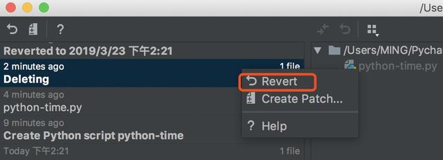拥抱Vim，远离鼠标
在大多数场景之下，使用鼠标的效率和精准度，是远不如键盘快捷键的（前提是你已经相当熟练的掌握了快捷键），这个你得承认吧。
Vi 可以满足你对文本操作的所有需求，比可视化界面更加效率，更加 geek。如果你和我一样，是忠实的 vim 粉。在安装完 Pycharm 完后，肯定会第一时间将 ideaVim 这个插件也装上，它可以让我们在 Pycharm 中 使用 vim 来编辑代码。
安装方法如下，安装完后需要重启 Pycharm 生效。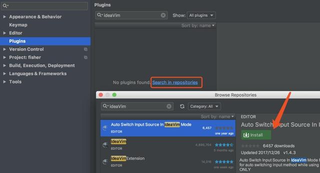
代码模板，效率编码
Pycharm 提供的这个代码模板，可以说是相当实用的一个功能了。它可以在你新建一个文件时，按照你预设的模板给你生成一段内容，比如解释器路径，编码方法，作者详细信息等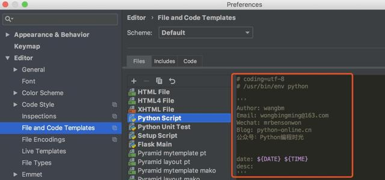
按照上图模板，生成的效果如下。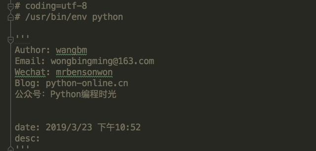
除了新建文件时可以初始化文件，在开发编写代码时，也同样使用 Pycharm 中自带的实用的代码模板，提高你的编码效率。 当你在键盘中敲入
Command + J时，就可以调出一个面板，从下图可以看出里面有许多预设的模板。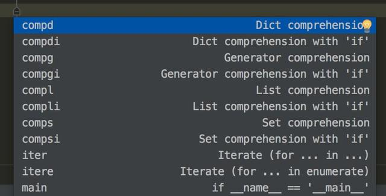
如果我们想选择最后一个 main ，可以继续键入 main，然后就可以直接生成如下这段平时都要手动敲入的代码。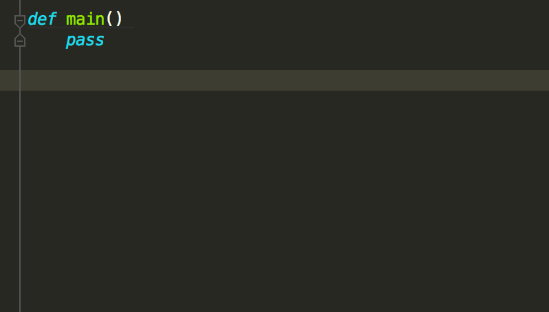
这里再举个例子，for 循环 可以这样写。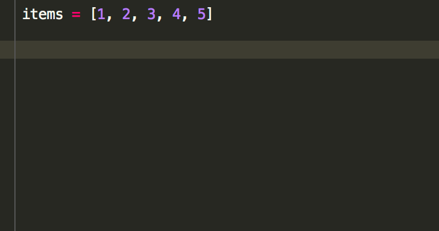使用书签，快速定位
都我在看框架的源代码时，最常使用的是 Command + B （也就是 command + 鼠标左键 ）一层一层地往里深入，但是当源代码比较多，可能一整个事件过程涉及十几文件，函数调用错综复杂，对于一个庞大的项目来说，有用的可能就几个关键函数，每次要找到这几个函数，都要重头从源函数再一层一层的找下去，这样实在太麻烦了，我常常因此把自己给看晕了。
直到后来我发现了 Pycharm 这个书签功能。
使用书签功能，我可以在在关键的位置打上书签，想看的时候，调用书签，快速定位即可。
使用它，你需要记住下面下几个快捷键
Command + F11打上书签
Shift + F11展示所有书签
F11 删除书签（经测试仅能在Windows上有效）
在你要打书签的位置，按下Command + F11，你可以给这个位置加个序号，可以是数字也可以是字母，假如在下面这个位置 加了 1 这个序号，下次你就可以使用Control + 1直接跳转到这个位置。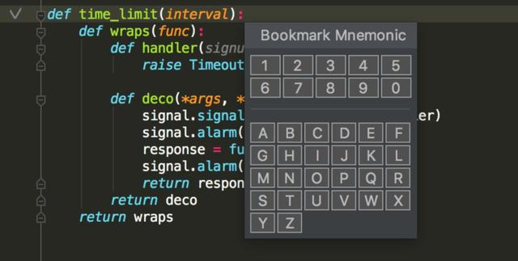
当然你也可以不加，不加的话就是匿名书签了。你可以使用Shift + F11展示所有的书签，再进行跳转。